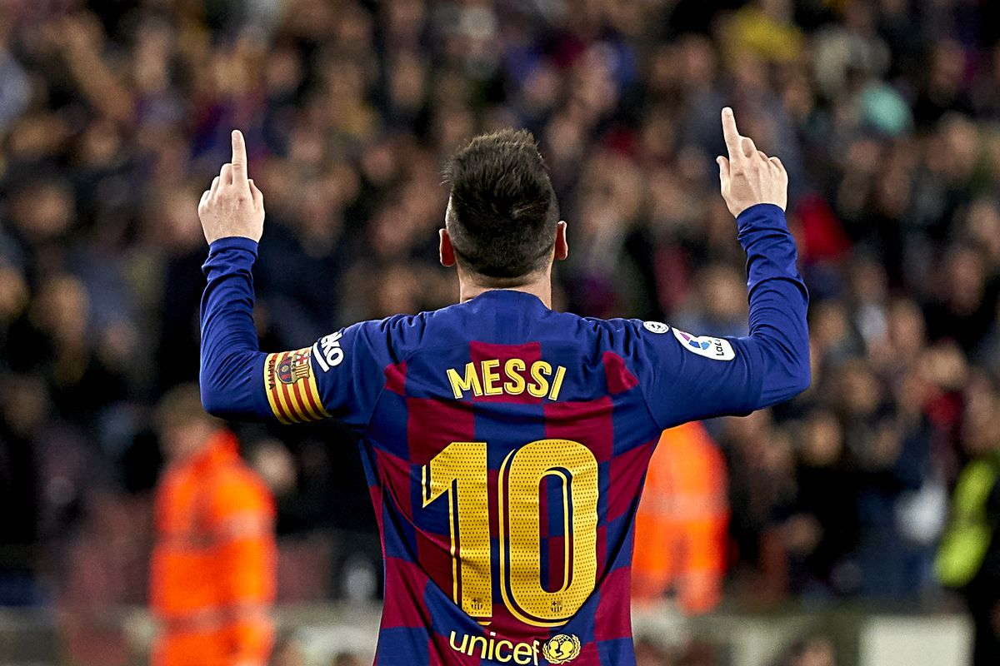

Biography
Lionel Messi is an Argentinian soccer player who has played for FC Barcelona, Paris Saint-Germain, and the Argentina national team . As a teenager, Messi moved from Argentina to Spain after FC Barcelona agreed to pay for medical treatments related to his growth hormone disorder. At the club, he earned renown as one of the greatest players in history, helping FC Barcelona win more than two dozen league titles and tournaments. In 2012, he set a record for most goals in a calendar year and, a decade later, helped the Argentina national team win its third FIFA World Cup. The seven-time Ballon d Or winner moved to Paris Saint-Germain in 2021, and in July 2023, he joined MLS Inter Miami club.
Quotes
I have fun like a child in the street. When the day comes when I'm not enjoying it, I will leave football.
Presentation Tags
Life of Messi before football
Luis Lionel Andres "Leo" Messi was born on June 24, 1987, in Rosario, Argentina. As a young boy, Messi tagged alone when his two older brothers played soccer with his friends, unintimidated by the bigger boys. At the age of 8, he was recruited to join the youth system of Newell's Old Boys, a Rosario-based club.
Career Achievements
Messi's career achievements lists is very long but among them few are awards Ballon d'Or:8, FiFa World player of the year:7, LaLiga Player of the Year:9, European golden shoes:6, Laures World Sports Award:2, World Cup Golden Ball:2, UEFA Men's player of the year:2, Copa America's most valuable player:2.
| ID | Category | Details |
|---|---|---|
| 1. | Name | Lionel Messi |
| 2. | Age | 36 Years |
| 3. | DOB | June 24, 1987 |
| 4. | Golden Shoes | 6 times |
| 5. | Total Trophies | 44 Trophies |